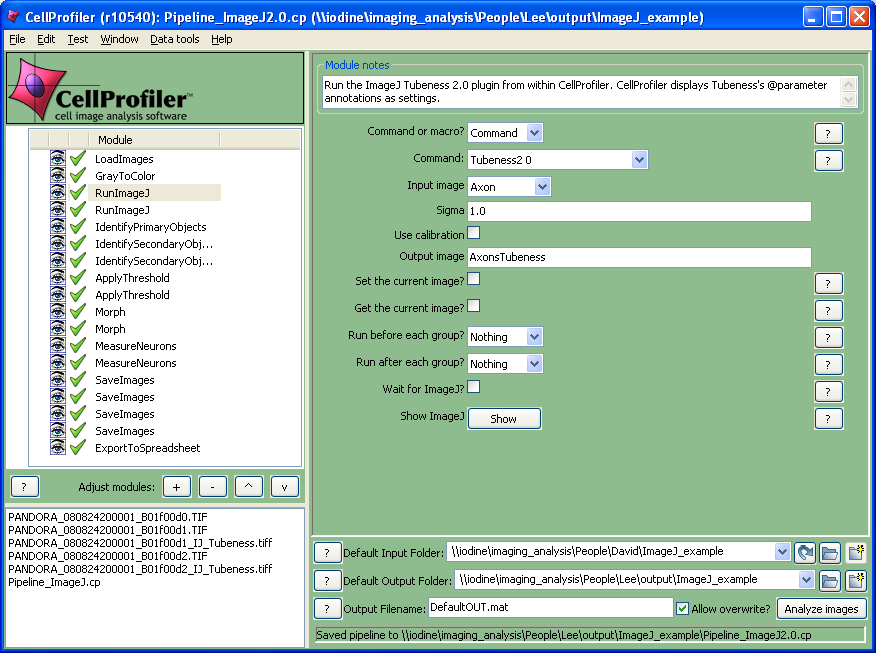

ImageJ2 and Fiji
Curtis Rueden,
UW-Madison LOCI
Tweets to #imagej2015


A colleague told me once:
It's not the code that matters—it's the community.
But you can't build a house with your bare hands.
Well, maybe you can...
...but there are limits.
You can't build a house alone, either.
Tools, and people to create
and use them, are both necessary.
But wait...
- Creating software is not like building a house!
- It's more like designing a house.
- Once designed, you can mass produce it.
- But the design keeps changing...
- Is this analogy even helpful anymore?
- No more analogies!
A brief history of ImageJ
| 1997 |  |
|
| 2007 |


|
|
| 2009 |


|
|
| 2011 |


|
ImageJ2 milestones
| 2011 | Update sites |
| 2012 | First ImageJ2 beta version |
| 2013 | Personal update sites |
| 2014 | Fiji Is Just ImageJ2 |
| ImgLib2 comes out of beta | |
| Fiji builds become reproducible | |
| 2015 | Several major goals |
ImageJ2's Mission
- Create the next ImageJ, based on community needs
- Collaborate with others whenever beneficial
- Make ImageJ useful to a broad community
- Maintain backwards compatibility with ImageJ 1.x
- Provide a central online resource for ImageJ
- Lead ImageJ development with a clear vision
- Create the next ImageJ, based on community needs
- Collaborate with others whenever beneficial
- Make ImageJ useful to a broad community
- Maintain backwards compatibility with ImageJ 1.x
- Provide a central online resource for ImageJ
- Lead ImageJ development with a clear vision
- DESIGN
- COLLABORATE
- BROADEN
- MAINTAIN
- UNIFY
- LEAD
DESIGN | COLLABORATE | BROADEN | MAINTAIN | UNIFY | LEAD
GOLD = Social
BLUE = Architectural
RED = Technical
| COLLABORATE | BROADEN | MAINTAIN | UNIFY | LEAD
Create the next version of ImageJ, based on the needs of the community
What's great about ImageJ?
- Extensibility
- Available functions
What else is needed?
DESIGN | COLLABORATE | BROADEN | MAINTAIN | UNIFY | LEAD
Create the next version of ImageJ, based on the needs of the community
What is ImageJ2?
An end-user application
/** Loads and displays a dataset using the ImageJ API. */
public void loadAndDisplayDataset(final File file) {
// create the ImageJ application context with all available services
final ImageJ ij = new ImageJ();
// load the dataset
final Dataset dataset = ij.scifio().datasetIO().open(file.getAbsolutePath());
// display the dataset
ij.ui().show(dataset);
}
A reusable library
An extensible collection
of services & plugins
"Write once, run anywhere"
image processing routines
- A new, supremely extensible plugin framework
- Dimensions beyond X, Y, Z, time and channel
- Planes larger than 2 gigapixels
- Pixel types beyond uint8, uint16 and float32
- Access data beyond only files on disk
- Beyond one user, one desktop, one machine
An effort to overcome
the constraints of ImageJ
DESIGN | COLLABORATE | BROADEN | MAINTAIN | UNIFY | LEAD
Create the next version of ImageJ, based on the needs of the community
Components of ImageJ2
Image-specific components
More general than images
- Application container
- Plugin framework
- Module framework
- Display and UI frameworks
- Scripting framework and plugins
DESIGN | | BROADEN | MAINTAIN | UNIFY | LEAD
Collaborate with others whenever beneficial
The SciJava consortium
|
Kevin Eliceiri |

Jason Swedlow |

Pavel Tomancak |
Anne Carpenter |

Michael Berthold |

Christian Dietz |

Mark Hiner |

Lee Kamentsky |

Brian Northan |
Tobias Pietzsch |
Stephan Preibisch |
Curtis Rueden |

Stephan Saalfeld |
Johannes Schindelin |
And everyone supporting open science + open software!
DESIGN | COLLABORATE | BROADEN | MAINTAIN | UNIFY | LEAD
Collaborate with others whenever beneficial
The SciJava pledge
Work together, reuse code and synergize
DESIGN | COLLABORATE | BROADEN | MAINTAIN | UNIFY | LEAD
Collaborate with others whenever beneficial
Interoperability + integration
SciJava Modules: parameterized commands and scripts

@Parameter(label="Input image")
private ImagePlus original;
@Parameter(label="Sigma")
private double sigma = 1.0;
@Parameter(label="Use calibration")
private boolean useCalibration;
@Parameter(type=ItemIO.OUTPUT, label="Output image")
private ImagePlus result;
DESIGN | COLLABORATE | | MAINTAIN | UNIFY | LEAD
Make ImageJ useful to a broad community
Who is the target audience?
- Scientific users
- Casual users
- Software developers
- Image processing experts
Need rapid iteration + communication
DESIGN | COLLABORATE | BROADEN | MAINTAIN | UNIFY | LEAD
Make ImageJ useful to a broad community
Separation of concerns


- Migrate non-life-sciences code from Fiji to ImageJ2
- Migrate image processing algorithms to ImageJ Ops
- Broaden the image metadata model beyond microscopy
- Migrate non-image-specific code from ImageJ to SciJava Common
DESIGN | COLLABORATE | BROADEN | MAINTAIN | UNIFY | LEAD
Make ImageJ useful to a broad community
N-dimensional data model

ImageJ Ops
"Write once, run anywhere" image processing
- Powerful and general
- Easy to use and extend
- Good performance
# @OpService ops
ops.help("math.add")
(ArrayImg image) =
net.imagej.ops.math.add.AddConstantToArrayDoubleImageP(
ArrayImg image,
double value)
(ArrayImg image) =
net.imagej.ops.math.add.AddConstantToArrayByteImageP(
ArrayImg image,
byte value)
(ArrayImg image) =
net.imagej.ops.math.add.AddConstantToArrayDoubleImage(
ArrayImg image,
double value)
(ArrayImg image) =
net.imagej.ops.math.add.AddConstantToArrayByteImage(
ArrayImg image,
byte value)
(Img out?) =
net.imagej.ops.math.add.AddIterableIntervalToImg(
Img out?,
Img in,
IterableInterval ii)
(int result) =
net.imagej.ops.math.PrimitiveMath$IntegerAdd(
int a,
int b)
(long result) =
net.imagej.ops.math.PrimitiveMath$LongAdd(
long a,
long b)
(float result) =
net.imagej.ops.math.PrimitiveMath$FloatAdd(
float a,
float b)
(double result) =
net.imagej.ops.math.PrimitiveMath$DoubleAdd(
double a,
double b)
(IterableRealInterval image) =
net.imagej.ops.math.add.AddConstantToImageInPlace(
IterableRealInterval image,
NumericType value)
(IterableInterval a) =
net.imagej.ops.math.add.AddRandomAccessibleIntervalToIterableInterval(
IterableInterval a,
RandomAccessibleInterval b)
(PlanarImg image) =
net.imagej.ops.math.add.AddConstantToPlanarDoubleImage(
PlanarImg image,
double value)
(RealType out) =
net.imagej.ops.math.RealMath$Add(
RealType out,
RealType in,
double constant)
(RealType out?) =
net.imagej.ops.math.RealBinaryMath$Add(
RealType out?,
RealType in,
RealType b)
(NumericType out?) =
net.imagej.ops.math.add.AddConstantToNumericType(
NumericType out?,
NumericType in,
NumericType value)
(RandomAccessibleInterval out) =
net.imagej.ops.math.add.AddConstantToImageFunctional(
RandomAccessibleInterval out,
IterableInterval in,
NumericType value)
DESIGN | COLLABORATE | BROADEN | | UNIFY | LEAD
Maintain backwards compatibility with ImageJ1
DESIGN | COLLABORATE | BROADEN | MAINTAIN | UNIFY | LEAD
Maintain backwards compatibility with ImageJ1
ImageJ2 is ImageJ 1.x, plus the new stuff
- ImageJ2 includes ImageJ version 1.x
- ImageJ2 user interfaces (UIs) are plugins
- ImageJ2's
LegacyUI= ImageJ 1.x as a plugin - IJ1 and IJ2 data structures are translated on the fly
- "Mix and match" ImageJ 1.x and ImageJ2 capabilities
DESIGN | COLLABORATE | BROADEN | MAINTAIN | UNIFY | LEAD
Maintain backwards compatibility with ImageJ1
 Maintaining the stack
Maintaining the stack
- Everything on GitHub
- Versioned with SemVer
- Organized using a Bill of Materials
- NEW: the SciJava melting pot
DESIGN | COLLABORATE | BROADEN | MAINTAIN | | LEAD
Provide central online resources for ImageJ
Plugins
- http://imagej.nih.gov/ij/plugins/
- http://imagejdocu.tudor.lu/doku.php?id=plugin:start
- http://fiji.sc/Category:Plugins
- http://imagej.nih.gov/ij/plugins/mbf/
- http://sourceforge.net/projects/ij-plugins/
- And dozens of other lists and collections
- http://imagej.net/List_of_update_sites/
- http://sites.imagej.net/
DESIGN | COLLABORATE | BROADEN | MAINTAIN | UNIFY | LEAD
Provide central online resources for ImageJ
Online resources
| imagej.net | primary portal |
| mirror.imagej.net | ImageJ 1.x website |
| wiki.imagej.net | ImageJ documentation |
| search.imagej.net | towards a unified search |
| sites.imagej.net | personal update sites |
DESIGN | COLLABORATE | BROADEN | MAINTAIN | UNIFY | LEAD
Provide central online resources for ImageJ
Developer resources
| javadoc.imagej.net | developer documentation |
| status.imagej.net | tracking releases |
| maven.imagej.net | release binaries |
| jenkins.imagej.net | continuous integration |
DESIGN | COLLABORATE | BROADEN | MAINTAIN | UNIFY |
Lead ImageJ development with a clear vision
Managing expectations
DESIGN | COLLABORATE | BROADEN | MAINTAIN | UNIFY | LEAD
Lead ImageJ development with a clear vision
The future of ImageJ
DESIGN | COLLABORATE | BROADEN | MAINTAIN | UNIFY | LEAD
Lead ImageJ development with a clear vision